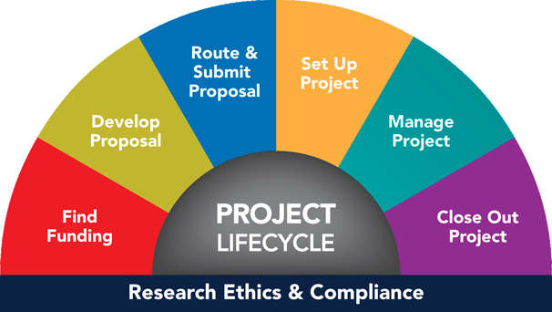

Online Research Administration Competencies Reference Tool
A web-based application that navigates university research administrators through career development resources
Project Type
Team-based, client-driven project under UMSI Design Clinic
Duration
Fall 2019 (3 months)
Role
Conducted user research, assisted with project management and maintained communication with mentor
Skills
Interviews, team work
Challenge
How do we create a web-based, user-friendly resource reference tool for university research administrators?
The Office of Research and Sponsored Projects at a large research university has developed a “Research Administration Competencies Reference” spreadsheet to provide a framework of the skills and knowledge required, as well as the resources available, for successful research administrators. The current spreadsheet is large and not yet in use.
Research
Check back later for more updates!
We are now in the process of conducting interviews with future users (i.e., research administrators).